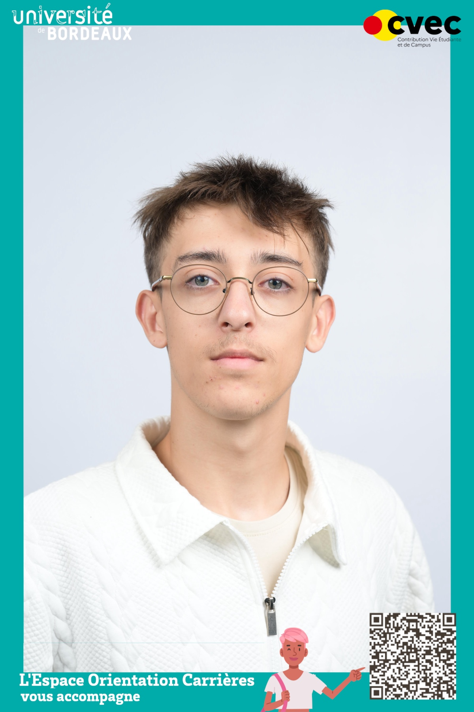

Quelques réalisations
Voir tous les projets →Chargement des projets...
Étudiant en 2e année de BUT Informatique, je suis passionné par le développement logiciel et la création de projets concrets. Curieux et rigoureux, j’aime apprendre, expérimenter et développer mes compétences à travers différents projets.

Chargement des projets...